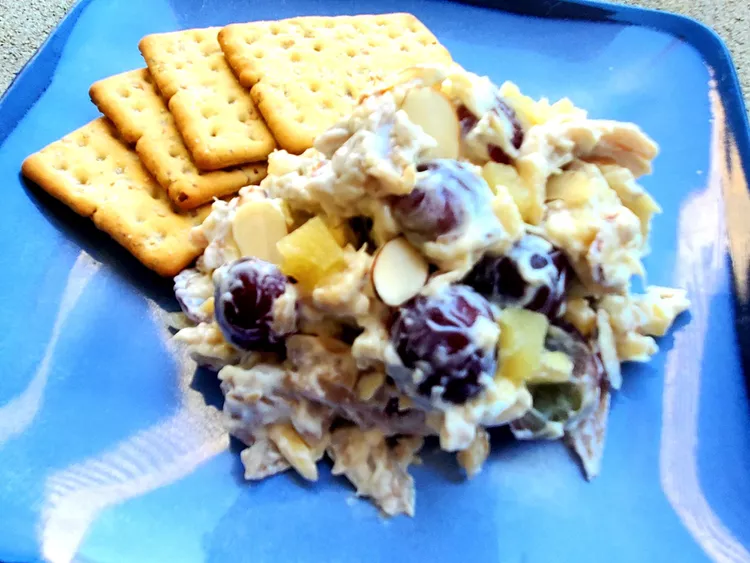

Hawaiian Chicken Salad

Description
This delicious, fruity Hawaiian salad with chicken is a change from the
standard. It’s easy to double the recipe for a larger group.
Ingredients
- 2 (3 ounce) packages cream cheese, softened
- ⅓ cup creamy salad dressing
- 1 (8 ounce) can pineapple tidbits, juice reserved
- 3 (5 ounce) cans chunk chicken, drained
- 1 cup blanched slivered almonds
- 1 ½ cups seedless grapes, halved
Steps
-
Beat cream cheese in a medium bowl until fluffy. Mix in salad dressing
and 2 tablespoons reserved pineapple juice.
-
Stir in pineapple tidbits, chicken, almonds, and grapes until evenly
coated. Chill in the refrigerator until serving.
Homepage